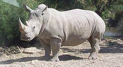

MAMIFEROS

El rinoceronte blanco es una especie de mamífero perisodáctilo de la familia Rhinocerotidae. Es la mayor de las cinco especies de rinocerontes que existen, el cuarto
animal terrestre más grande y el cuarto mamífero terrestre más pesado después de las tres especies de elefantes.
El hábitat típico del rinoceronte blanco incluye bosques densos, sabanas y bosques con aberturas cubiertas de hierba, cerca de fuentes de agua.
Se alimenta básicamente de hierba, que puede segar en grandes cantidades gracias a los labios anchos y rectos que lo distinguen
CARACTERISTICAS
- Su nombre en latín Rhinocerotidae significa “nariz” y “cuerno”
- Estos imponentes mamíferos suelen pesar entre 800 y 1.400 kilos
- Alcanzan una altura media de 1,70 metros
- Su sentido de la vista está muy poco desarrollado
- Son animales solitarios y muy territoriales, especialmente cuando se trata de proteger a sus crías.